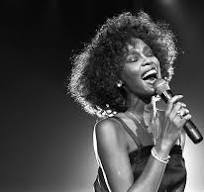

About Whitney Houston's Summary Page
Born on August 9, 1963, in Newark, New Jersey, Houston almost seemed destined from birth to become a singer. Her mother and cousin were both legendary figures in American gospel, soul and pop music. Cissy Houston was the choir minister at New Hope Baptist Church, and it was there that a young Houston got her start. Even as a child, Houston was able to wow audiences; she later told Diane Sawyer that a rapturous response from the congregation at New Hope had a powerful effect upon her: "I think I knew then that [my singing ability] was an infectious thing that God had given me."
When she was 19, Houston was discovered in a nightclub by Arista Records' Clive Davis, who signed her immediately and took the helm of her career as she navigated from gospel to pop stardom. In 1983, Houston made her debut on national television, appearing on The Merv Griffin Show to sing "Home" from the musical The Wiz. She and Davis spent the next two years working on her debut album, finding the best producers and songwriters available to showcase her amazing vocal talent.